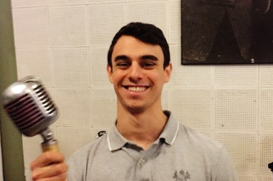

Anthony John Clark
aclark3244@gmail.com
Education
SUNY College at Oneonta, Oneonta, NY
Spring 2014
Bachelor of Arts, Music Industry
Mass Communications Minor
Dean’s List, GPA 3.66, Graduated cum laude
Experience
Produce Buyer
, Whole Foods Market, Albany, NY
July 2015 – September 2017
Built an algorithm in Excel to predict perishable sales based on forecasts and previous week sales
Designed planograms for product merchandising displays based on the unique needs of store layout
Created new team standards for the taking of inventory
Canada English Ingest Editor
, Gracenote, Glens Falls, NY
April 2017 – January 2019
Created and upheld new coverage standards for night-shift coverage
Provided guidance for the automated ingest of high-profile channels and clients
Completed comprehensive UAT and feedback for engineering teams
Proposed new standards for data governance
Customer Care Representative – TV Data
, Gracenote, Glens Falls, NY
January 2019 – current
Acknowledging B2B client communications via phone and email in a timely manner for tier one clients
Composing troubleshooting ‘playbooks’ to replicate future service scenarios and cut down future case resolution time
Provide UAT and for new tools and proposing changes to existing internal software applications for data entitlement to clients
Product Queue specialist, attending training for specialization in new and complex TV data products
Proficiencies
Redwood Cronacle
Interpreting JSON, XML, ASCII
JIRA
Salesforce
Microsoft Word, Excel
Google Suite